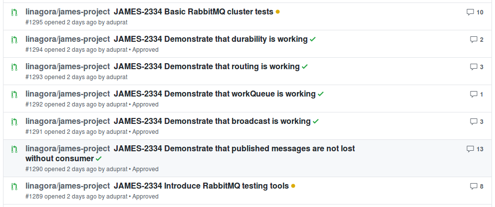

JAMES Team DEMO - Sprint #35
Message Queue choice
Rationals
Implementation of a distributed mail queue
Complex administration operations:
- Visualize queue content
- Remove arbitrary mails
RabbitMQ do not allow a straightforward implementation of this
Approach
- Avoid middleware multiplication
- Not only James uses a message queue.
- Thus we need to evaluate needs
- Then deduce choice criteria
- Evaluate available message queue solutions
Team leader meetings
- Uses cases: work queue, routing, broadcast (API)
- Uses for inter-service communication
- Ask encountered limitations
- Replay is seen as a cool feature
Criteria of choice
- we need basic messaging capabilities
- consistency, at least one semantic, durability
- as a bonus, advanced management capabilities
Additional criteria:
- maturity of the project
- community
- performances, …
Advanced proof of concept
Conclusions
- None of the solutions fully fills James needs.
- RabbitMQ is mature, and is a globally good fit for OpenPaaS
- Kafka adds replay, but brings additional middleware dependencies
- RocketMQ is still too immature.
- Artemis clustering is not a good fit.
- NSQ requires a hack to support replay. No AMQP planned.
Link to the article